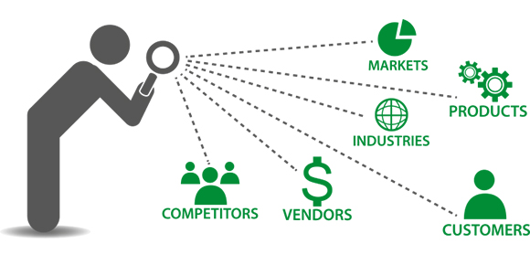

<section id="services" class="services-section" style="padding-top:85px;">
  <div class="jumbotron" style = "padding-top: 0px; padding-bottom: 0px; background-color: transparent">
    <div class="w3-container" id="services">
      <div class="w3-content" style="max-width:1400px ">
          <div class="w3-content" style="padding-left:1em;">
        <h5 class="w3-center w3-padding-64"><span class="w3-tag w3-wide"><font size="8"><b><u>VA SERVICES</u></b></font></span></h5>
        <p><font size="4">A virtual marketing assistant is someone who helps their clients in various kind of marketing tasks, such as Facebook marketing, Twitter marketing, email marketing, etc.” Here is a list of important tasks that you can assign to your virtual marketing assistant: Social media marketing.</font</p>
          <br>
          <br>
        <p><font size="3"><b><br>There are mainly 8 types of virtual assistants.</b></font></p>
        <br>
        <div class="w3-panel w3-leftbar w3-light-grey">
          <div class="w3-content" style="padding-left:1em;">
            <div id="services" class="w3-container menu w3-padding-48 w3-card">
            <ol>
          <li><font size="5">SOCIAL MEDIA VIRTUAL ASSISTANT<font size="4">- Social media is a necessary evil. Small business owners spend an average of between 6 to 10 hours a week on social media marketing.</font></li>
          <p><font size="4">- “Virtual social media assistant is nothing, but a remote worker who handles social media marketing tasks of a client.”</font></p>
              
              <br>
              <p><font size="3">Here is a list of some important tasks you can assign to your virtual social media assistant:</i></font></p>
                <p><font size="2"><i>-Creating Facebook, LinkedIn, Google + page for your business</i></font></p>
                <p><font size="2"><i>-Creating social media profiles on different channels</i></font></p>
                <p><font size="2"><i>-Doing research to find fresh content for social media posts</i></font></p>
                <p><font size="2"><i>-Scheduling posts with the help of social media tools</i></font></p>
                <p><font size="2"><i>-Increasing and engaging your audience on different social channels</i></font></p>
                <p><font size="2"><i>-Creating performance metrics and measuring analytics</i></font></p>
                <p><font size="2"><i>-Keeping a watchful eye on your competitors</i></font></p>
                <br>
                <p><font size="2">Virtual social media assistant from a reputed agency are usually well-versed in managing all the leading social media platforms, such as Facebook, Twitter, LinkedIn, Instagram, Pinterest, YouTube, etc.</font></p>
                <p><font size="2">So you shouldn’t worry about anything once you hire a good social media virtual assistant.</font></p>
                <br>
          <li><font size="5">REAL ESTATE VIRTUAL ASSISTANT<font size="4">- “Real estate virtual assistant is a remote worker who can complete a wide variety of real estate tasks, such as preparing & filing paperwork, responding to email inquiries, setting up meetings, etc.”</font></li>
              
              <br>
              <p><font size="3">Here is a list of important tasks that you can assign to your real estate virtual assistant:</i></font></p>
                <p><font size="2"><i>- Real estate data scraping with the help of classifieds software from different websites, such as Craigslist, Backpage, Oodle, and eBay</i></font></p>
                <p><font size="2"><i>- Posting ads on Craigslist, Zumper, Postlets, RentLinx, Zillow and others</i></font></p>
                <p><font size="2"><i>- Sending introductory messages to potential renters along with appropriate listings based on what they require</i></font></p>
                <p><font size="2"><i>- Compiling morning reports with information received from MLS</i></font></p>
                <p><font size="2"><i>- Managing your calendar</i></font></p>
                <p><font size="2"><i>- Responding to email inquiries</i></font></p>
                <p><font size="2"><i>- Setting up your meetings</i></font></p>
                <p><font size="2"><i>- Following up with prospective renters and buyers</i></font></p>
                <p><font size="2"><i>- Social media campaigns for your real estate website</i></font></p>
                <p><font size="2"><i>- Writing blogs and articles for content marketing</i></font></p>
                <p><font size="2"><i>- Database management</i></font></p>
                <p><font size="2"><i>- Email campaigns</i></font></p>
                <p><font size="2"><i>- Doing property research and creating property report</i></font></p>
                <p><font size="2"><i>- Following up over phone and email with parties involved in the closing process like a home inspector and home appraiser</i></font</p>
              <br>
          <li><font size="5">VIRTUAL RESEARCH ASSISTANT <font size="4">- The virtual research assistant is someone who does internet research for their clients.</font></li>
          <br>
              
              <br>
              <p><font size="3">Here is a list of tasks that you can assign to a virtual research assistant:</i></font></p>
                <p><font size="2"><i>- Searching for credible sites for up-to-date information based on your needs</i></font></p>
                <p><font size="2"><i>- Compiling research data</i></font></p>
                <p><font size="2"><i>- Presenting data in an easy-to-understand format</i></font></p>
                <p><font size="2"><i>- Searching for important statistics based on your business</i></font></p>
                <p><font size="2"><i>- Identifying opportunities for your business growth</i></font></p>
                <p><font size="2"><i>- Conducting competitive intelligence</i></font></p>
                <p><font size="2"><i>- Helping you choose a right vendor by comparing prices</i></font></p>
                <p><font size="2"><i>- Searching for guest blogging opportunities</i></font></p>
              <br>
          <li><font size="5">VIRTUAL ADMINISTRATIVE ASSISTANT <font size="4">- “A virtual administrative assistant is someone who does a variety of administrative tasks, such as managing contact lists, handling billing and accounting, handling basic HR duties, etc.”</font></li>
              <br>
              
              <br>
              <p><font size="3">The list of important tasks that you can assign to your virtual administrative assistant are mentioned below:</i></font></p>
                <p><font size="2"><i>- Managing emails and telephone calls</i></font></p>
                <p><font size="2"><i>- Scheduling management</i></font></p>
                <p><font size="2"><i>- Bookkeeping and customer management</i></font></p>
                <p><font size="2"><i>- Keeping you informed about your industry</i></font></p>
                <p><font size="2"><i>- Managing a contact list in a spreadsheet</i></font></p>
                <p><font size="2"><i>- Calendar management and setting up meetings</i></font></p>
                <p><font size="2"><i>- Making travel arrangement</i></font></p>
                <p><font size="2"><i>- Document formatting and management</i></font></p>
              <br>
          <li><font face="5">eCOMMERCE VIRTUAL ASSISTANT</font><font size="4">- eCommerce virtual assistants are adept at working with Shopify, Magento, or any other platform. So, you won’t have to worry about anything.</font></li>
              <br>
              
              <p><font size="3">Here is a list of important tasks that you can delegate to your eCommerce virtual assistant:</i></font></p>
                <p><font size="2"><i>- eCommerce product data entry</i></font></p>
                <p><font size="2"><i>- Handling transaction in a seamless way</i></font></p>
                <p><font size="2"><i>- Managing inventory on a daily basis</i></font></p>
                <p><font size="2"><i>- Writing SEO-friendly product descriptions</i></font></p>
                <p><font size="2"><i>- Conducting your competitors’ analysis</i></font></p>
                <p><font size="2"><i>- Providing 24/7 email and chat supports to your customers</i></font></p>
                <p><font size="2"><i>- Taking care of order processing</i></font></p>
                <p><font size="2"><i>- Editing product images</i></font></p>
                <p><font size="2"><i>- Product category management</i></font></p>
                <p><font size="2"><i>- Coupon data entry</i></font></p>
                <p><font size="2"><i>- Product classification & taxonomy development</i></font></p>
                <p><font size="2"><i>- Handling return and exchange of products</i></font></p>

              <br>
          <li><font size="5">DATA ENTRY VIRTUAL ASSISTANT</font><font size="4">Data entry virtual assistants work as a savior for entrepreneurs. They can save you both time and money.</font></li>
              <br>
              
              <br>
              <p><font size="3">Here a list of tasks that you can assign to your data entry virtual assistant:</i></font></p>
                <p><font size="2"><i>- Preparing, compiling and sorting data for entry</i></font></p>
                <p><font size="2"><i>- Reviewing data for accuracy</i></font></p>
                <p><font size="2"><i>- Data management (updating data & deleting unnecessary files)</i></font></p>
                <p><font size="2"><i>- Keeping a track for activities and tasks</i></font></p>
                <p><font size="2"><i>- Generating reports and entering data into your CRM system</i></font></p>
              <br>
          <li><font size="5">VIRTUAL BOOKKEEPING ASSISTANT</font><font size="4">Bookkeeping is the backbone of every business – small or big. And needless to say, bookkeeping demands time and resource.</font></li>
              <br>
              
              <br>
              <p><font size="3">You can delegate a variety of tasks to your virtual bookkeeping assistant. Here is a list of some important tasks:</i></font></p>
                <p><font size="2"><i>- Inventory management</i></font></p>
                <p><font size="2"><i>- Taking care of record keeping and bookkeeping procedures</i></font></p>
                <p><font size="2"><i>- Budgeting and year-end bookkeeping</i></font></p>
                <p><font size="2"><i>- Projecting cash flow and account reconciliation</i></font></p>
                <p><font size="2"><i>- Revenue expenditure management</i></font></p>
                <p><font size="2"><i>- QuickBooks and Sage 50 accounts management</i></font></p>
                <p><font size="2"><i>- Payroll processing</i></font></p>
                <p><font size="2"><i>- Bank and credit card reconciliation</i></font></p>
                <p><font size="2"><i>- Excel bookkeeping data entry</i></font></p>
                <br>
                <p><font size="2"><i>You can easily hire virtual assistants adept at widely used software, such as Xero, NetSuite, QuickBooks, etc.</i></font></p>
              <br>
          <li><font size="5"><center>VIRTUAL MARKETING ASSISTANT</center></font></li>
        <font size="4">“A virtual marketing assistant is someone who helps their clients in various kind of marketing tasks, such as Facebook marketing, Twitter marketing, email marketing, etc.”</font></li>
                  <br>
                    
                    <br>
                  <p><font size="4">A virtual marketing assistant will not only keep your marketing efforts on the track, but also save you time and money. </i></font></p>
                  <br>
                  <p><font size="3">Here is a list of important tasks that you can assign to your virtual marketing assistant: </i></font></p>
                    <p><font size="2"><i>- Social media marketing</i></font></p>
                    <p><font size="2"><i>- Conducting keyword research</i></font></p>
                    <p><font size="2"><i>- Creating and running AdWord campaigns</i></font></p>
                    <p><font size="2"><i>- Promoting your blog post</i></font></p>
                    <p><font size="2"><i>- Developing new and innovative content for all social media platforms</i></font></p>
                    <p><font size="2"><i>- Researching and identifying new leads in your business domain</i></font></p>
                    <p><font size="2"><i>- Managing and setting up mail merges using YesWare for Gmail</i></font></p>
                    <br>
                    <br>
                      <p><font size="4"><i>Share your time with other members of your team or even clients. Send invitations, manage permissions and set caps on time that is allowed to be shared. </i></font></p>

            </div>
        </ol>

      </div>
    </div>
</div>
</section>
